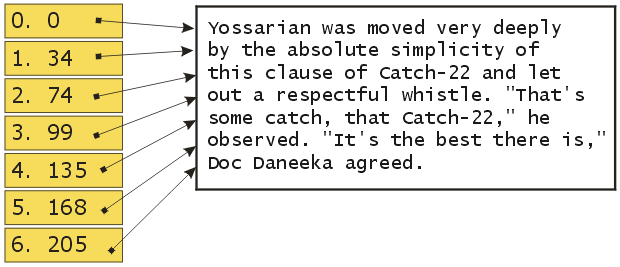
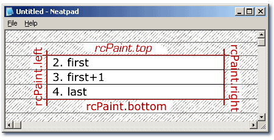

Loading a text file
Introduction
本記事は、「Design and Implementation of a Win32 Text Editor」シリーズの第2弾です。まだパート1をお読みでない方は、今すぐお読みください。
さて、公開されているソースコードをダウンロードして同化し、コンパイルしたと仮定すると、まだ何もできない基本的なスケルトンのテキストエディタができあがっているはずです。パート2のミッションは、テキストファイルをメモリに読み込み、TextViewコントロールに表示することです。しかし、夢中になってはいけません。今のところ、テキストファイルを読み込んで、非常に基本的な表示をすることだけが目的で、スクロールやキーボード・マウスのサポートはまだできていません。
Text Documents
テキストファイルには、印刷不可能な文字（ASCII制御文字）を含めてはならず、テキストの行は共通の行末区切り記号（キャリッジリターン／ラインフィードのペアなど）で区切られるという、一般的に理解されている慣習がありますが、テキスト文書は基本的なバイナリファイルにすぎません。
テキストエディタは、テキストファイルのバイナリコンテンツを解釈し、そのコンテンツを行指向の方法でユーザに表示することが仕事です。このチュートリアルシリーズのパート1では、テキストエディタの構造について、TextViewとTextDocumentオブジェクトについて説明しました。そこで、最初に取り上げるのは、C++のクラスとして表現されるTextDocumentオブジェクトです。TextDocument object - which we will represent as a C++ class:
class TextDocument
{
public:
bool init(char *filename);
ULONG getline(ULONG lineno, char *buf, size_t len);
ULONG linecount();
private:
bool init_linebuffer();
char *buffer;
int length;
};
基本的なC++インターフェースは非常にシンプルです。ファイルをTextDocumentに読み込むには、initクラスのメンバーを使います。行番号と行の内容を格納するバッファを指定する getline メソッドを使って、テキストの行を取得することができます。
TextDocumentクラスは、現時点では完全にASCIIで運用されていることに注意してください。つまり、Unicodeには対応していません。C++のテンプレートを使って、さまざまなタイプをサポートすることもできました。しかし、現時点では、この問題にどのようにアプローチするのがベストなのか、まだ決めかねているので、インターフェイスはできるだけシンプルにしておきます。結局のところ、これはTextDocumentの「捨て身」の実装であり、後ほどシリーズの中で完全に書き直すことになります。
Loading a text file
テキストファイルを読み込むための最初の試みは、できるだけシンプルなものにしたいと思います。以下のTextDocument::init関数は、TextDocumentのメインインターフェイスです。
bool TextDocument::init(char *filename)
{
HANDLE hFile;
hFile = CreateFile(filename, GENERIC_READ, FILE_SHARE_READ, 0, OPEN_EXISTING, 0, 0);
if(hFile == INVALID_HANDLE_VALUE)
return false;
return init(hFile);
}
TextDocument::initは、単にwin32標準のCreateFile APIを使ってファイルを開き、CreateFileが返したHANDLEを使ってファイルの内容を読み込むヘルパー関数に制御を渡します。
bool TextDocument::init(HANDLE hFile)
{
ULONG numread;
if((length = GetFileSize(hFile, 0)) == 0)
return false;
// allocate new file-buffer
if((buffer = new char[length]) == 0)
return false;
// read entire file into memory
ReadFile(hFile, buffer, length, &numread, 0);
// work out where each line of text starts
init_linebuffer();
CloseHandle(hFile);
return true;
}
ご覧のように、ファイルの読み込みはとても簡単です。ファイルの大きさを計算し、テキストを格納するためのバッファを確保して、ファイルをメモリに読み込みます。大きなファイルの場合、読み込みに非常に時間がかかったり、十分なメモリがないと完全に読み込めなかったりするので、これはあまり賢いやり方ではありません。
これは「捨てられた」TextDocumentクラスであることをご理解ください。あらゆるサイズのファイルをサポートするTextDocumentクラスを書くのは非常に難しいので、このバージョンのTextDocumentは意図的にできるだけシンプルなものにしています。このシリーズの後半では、ファイルローディングについて再考し、このクラスを適切に書く予定です。
Carriage-returns and Linefeeds
テキスト文書は何行で構成されていますか？ファイルを一行ごとに読むには？その答えは、「テキストの行」をどのように定義するかにかかっています。最も簡単に言えば、テキストの行とは、ファイル内の一連の文字で、明確に定義された行末マーカーを持つものです。各行の文字数はあまり気にしませんが、各行の開始点と終了点を特定する方法を知っておく必要があります。
テキストの行を区切るには、主に3つの規則があります。DOSやWindowsでは、キャリッジリターンとラインフィードのペアを使用します。UNIXやLinuxではラインフィード1文字、Macintoshではキャリッジリターン1文字が使われます。これらすべてのケースに対処しようとすると、いくつかの問題が明らかになりますが、ここではDOS/Windowsのケースに集中します。将来のチュートリアルでは、最後の2つのオプション（および、ラインセパレータのすべての組み合わせを持つファイルに遭遇することができる別のケース）について説明します。
TextViewコントロールは、ドキュメントの長さを反映してスクロールバーを設定できなければならないので、ドキュメントにあるテキストの行数を知る必要があります。また、テキストドキュメントを一行ごとに描画するため、個々のテキスト行をランダムな順序で配置できる必要があります。
この問題を解決する最も一般的な方法は、「ラインバッファ」と呼ばれるものを実装することです。概念的には、ラインバッファは非常にシンプルで、ドキュメント内の各テキスト行の開始位置を指定する整数オフセットの配列に過ぎません。
">
上の図は、左手にラインバッファを示しています。バッファは右のテキストブロックで初期化されています。テキストを処理し、キャリッジリターン/ラインフィードシーケンスを検索し、各行のオフセットを記録しています。配列の各項目（0-6番）には、テキストの各行を開始する文字のオフセットが含まれています。
ファイルの読み込みと同じ場所でラインパーシングを行うのは自然な選択だと思われるので、TextDocumentではラインバッファを実装します。以下のTextDocument::init_linebuffer関数は、新しいファイルが読み込まれたときに呼び出されます。
bool TextDocument::init_linebuffer()
{
ULONG i = 0;
ULONG linestart = 0;
// allocate the line-buffer
if((linebuffer = new ULONG[length]) == 0)
return false;
numlines = 0;
// loop through every byte in the file
for(i = 0; i < length; )
{
if(buffer[i++] == '\r')
{
// carriage-return / line-feed combination
if(buffer[i] == '\n')
i++;
// record where the line starts
linebuffer[numlines++] = linestart;
linestart = i;
}
}
linebuf[numlines] = length;
return true;
}
init_linebuffer関数は、ラインバッファのスペースを確保してから、ファイルを処理するという2つのことを行っています。ファイル全体を処理するまでテキストが何行あるかわからないので、ラインバッファの大きさをどうやって知ることができるでしょうか？簡単に言うと、それはわからないということです。本物のTextDocumentクラスは、行数が増えると動的にラインバッファを再配置するか、ラインバッファが消費するメモリ量を制限する巧妙なアルゴリズムを使用します。
ここでは、ラインバッファをファイルと同じサイズにすることで、スペースが不足しないようにします。ファイルを処理するには、ファイルの各バイトをループして、キャリッジリターン文字を探す必要があります。
アルゴリズム自体は簡単です。キャリッジリターン（オプションのラインフィードが続く）が発生するたびに、新しいエントリがラインバッファの最後に追加され、現在の行頭が記録されます。linestart変数は、キャリッジリターンの後の文字、つまり次の行の開始点を「指し示す」ようになります。これは、ファイルに文字がなくなるまで続きます。処理された行の数は numlines 変数で更新されます。
Retrieving lines of text
このTextDocumentには初歩的なラインバッファが実装されているので、行ベースの検索は非常に高速になります。次の TextDocument::getline 関数は、TextDocument からテキストの各行にアクセスする方法を示しています。
ULONG TextDocument::getline(ULONG lineno, char *buf, size_t len)
{
char *lineptr;
ULONG linelen;
// find the start of the specified line
lineptr = buffer + linebuffer[lineno];
// work out how long it is, by looking at the next line's starting point
linelen = linebuffer[lineno+1] - linebuffer[lineno];
// make sure we don't overflow caller's buffer
linelen = min(len, linelen);
memcpy(buf, lineptr, linelen);
return linelen;
}
この関数は， lineno パラメータを linebuffer 配列への直接のインデックスとして使用して動作します。linebuffer[lineno]に格納されたオフセットは，テキストの実バッファに追加され，結果として行頭へのポインタとなります。行の長さ（文字数）は、現在の行のオフセットから次の行のオフセットを差し引くことで計算されます。正しいオフセットと長さが計算されると、生の行の内容が呼び出し側が提供したバッファにコピーされます。シンプルですが、機能しています。
char buf[200];
m_pTextDocument->getline(5, buf, sizeof(buf));
上の例では、行番号5のテキストのバッファを取得する方法を示しています。
Drawing the lines of text
TextDocumentに一行ごとにアクセスするのは、TextViewコントロールにテキストを描画する際の作業を簡単にするためです。
TextViewの描画とペイントのロジックは、WM_PAINTメッセージを中心にしています。実際、WM_PAINTハンドラは、プログラム全体の中で唯一、ペイントが行われる場所です。他のWin32プログラムと同様に、ペイントフレームワークは基本的なBeginPaint / EndPaintシーケンスとして始まります。
LONG TextView::OnPaint()
{
PAINTSTRUCT ps;
BeginPaint(m_hWnd, &ps);
// do painting
EndPaint(m_hWnd, &ps);
return 0;
}
上の関数は、単にデバイスコンテキストを検証して返します。TextViewのウィンドウクラスでは、背景ブラシがないことが指定されているので、1ピクセルも表示されません。
この時点では、PAINTSTRUCT::rcPaint RECT構造体で更新領域を指定するという、基本的な描画フレームワークしかありません。下図では、この更新領域を赤で示しています。
">
私たちの仕事は、この1つの任意の長方形の領域を、テキストの行で埋められる一連の水平方向のスパンに変換することです。上の図では、更新領域が3つのスパンに分割されています。変数 first と last は、更新が必要な最初の行と最後の行を表しています。
LONG TextView::OnPaint()
{
PAINTSTRUCT ps;
BeginPaint(m_hWnd, &ps);
ULONG first, last;
ULONG i;
// figure out which lines to draw
first = ps.rcPaint.top / m_nFontHeight;
last = ps.rcPaint.bottom / m_nFontHeight;
// draw the display line-by-line
for(i = first; i <= last; i++)
{
PaintLine(ps.hdc, i);
}
EndPaint(m_hWnd, &ps);
return 0;
}
上のOnPaintのコードはシンプルですが効果的です。最初に追加したのは「first = " 」と「last = " 」の2行です。これらの行は、更新領域を含む開始行と終了行を計算するために使用されます。ピクセルから論理行に変換したいので、現在のfont-heightで割ります。
更新領域の水平方向の長さを考慮していないことに注意してください。これは意図的なもので、この段階では各線を全体的に描き、描きすぎた場合にはデバイスコンテキストの更新領域が出力を切り取るようにした方が簡単だからです。
個々の線画は別の機能に延期しました。
LONG TextView::PaintLine(HDC hdc, ULONG nLineNo)
{
TCHAR buf[LONGEST_LINE];
ULONG len;
RECT rect;
GetClientRect(m_hWnd, &rect);
// work out where the line should be drawn
rect.top = nLineNo * m_nFontHeight;
rect.bottom = rect.top + m_nFontHeight;
// get the data for this single line of text
len = m_pTextDocument->getline(nLineNo, buf, LONGEST_LINE);
// draw text and erase the entire line background at the same time
TabbedExtTextOut(hdc, &rect, buf, len);
return 0;
}
ご覧のように、テキストの線を描くのは比較的簡単です。まず最初に行うことは、線を引く場所のピクセル座標を計算することです。ウィンドウのクライアント領域を出発点とし、上下を調整して線を単純な長方形の領域としてピクセルベースの座標で表現します。
線の外接矩形が得られたら、さらにヘルパー関数を使用してテキストを描画します - TabbedExtTextOut。TabbedExtTextOutは、TabbedTextOut APIのシンプルなラッパー関数で、ExtTextOut APIと同様に、実際のテキストで占められていない背景領域を消去する機能が追加されています。
描きたいテキストの実際の行は、先に開発したgetlineメソッドを使ってTextDocumentオブジェクトから取得します。TextDocumentの中にテキストファイルを格納する方法を変更しても、"getline "インターフェースを保持している限り、TextViewとTextDocumentは完全に別のエンティティにすることができるのです。
なお、この段階でのシンプルなテキスト出力は、まさにその通りで、制御文字やシンタックスカラー、スクロールなどは扱っていません。一度に一歩ずつ...
Coming up in Part 3
この時点で、私たちは非常にシンプルなテキスト表示機能を持っていますが、できることはかなり限られています。スクロールも、キーボードやマウスでの入力も、選択や強調表示も、色付けも、編集もできません。しかし、これでがっかりすることはありません。最初にシンプルなデザインを用意することは非常に重要です。
このチュートリアルシリーズをご覧になっている方は、実際のテキストストレージコンポーネントがどのように実装されているかを知りたいのではないでしょうか。これについては、近々チュートリアルで説明する予定ですが、今はまず基本的なグラフィカル・インターフェースを動作させたいと思います。
そのため、次のチュートリアルでは、少なくともテキスト文書全体を表示できるように、スクロールサポートを追加します。それが終わったら、マウスの入力に注目します。これは最も実装が難しい分野の一つです。カーソルの配置と選択範囲の強調表示を同時に処理しなければならないため、マウスと描画の両方のルーチンに慎重なコーディングが必要になります。